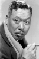
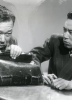
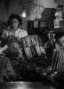

Country:Japan, 143 minutes
Spoken languages:Japanese, Latin, English, French
Genres:Drama
Director(s):Akira Kurosawa
Writer(s):Akira Kurosawa, Shinobu Hashimoto, Hideo Oguni
Video Codec:Unknown
Number: 2663


Certification:Not Rated
Storyline:
A bureaucrat tries to find meaning in his life after he discovers he has terminal cancer.
Cast:   
Medium: Original DVD,
Comments: Part of: The Film(s) of Akira Kurosawa
Loaned: No
Aspect ratio: Unknown